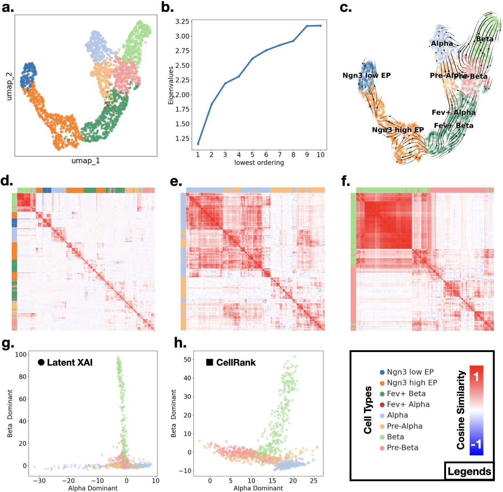
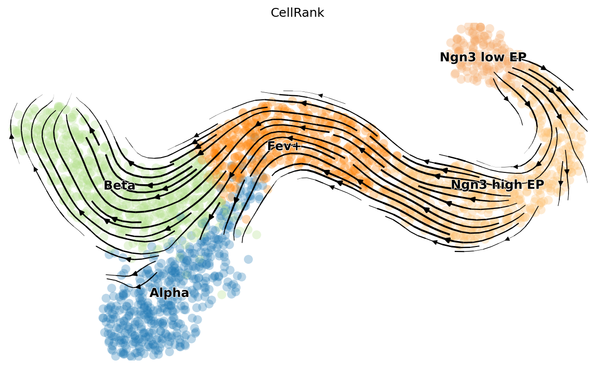
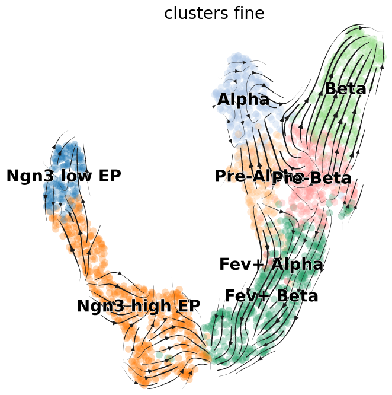

🔬 Tutorial 4: Pancreatic scRNA-seq
scRNA-seq Real-World Biological Data ~3000 genes · 2100 cells 4D latent
Our most complex benchmark: a real pancreatic differentiation dataset. We use only the spliced gene counts (no velocity information) and demonstrate that Latent-XAI recovers the Alpha and Beta lineage directions — results comparable to RNA velocity methods that require both spliced and unspliced counts.
Biological Context
During pancreatic development, progenitor cells (Ngn3 low EP → Ngn3 high EP → Fev+) bifurcate into:
- Alpha cells (glucagon-secreting) via Pre-Alpha
- Beta cells (insulin-secreting) via Pre-Beta
This bifurcation is the central challenge: can Latent-XAI identify two orthogonal directions of differentiation from static gene expression alone?
The pancreas dataset is highly challenging: only 2,100 cells, ~3,000 genes, sparse point clouds with very sparsely connected "bridge" cells between lineages, and high technical noise from metabolic labelling.
Data Preprocessing
import numpy as np
import scanpy as sc
import scvelo as scv
import torch
from torch.utils.data import TensorDataset, DataLoader
from sklearn.preprocessing import RobustScaler
# Load CellRank pancreas dataset.
adata = sc.read('data/pancreas_cellrank.h5ad')
# Match notebook filtering on clusters_fine.
keep_cells = np.array([True] * adata.shape[0])
for label in ['Fev+ Pyy', 'Fev+ Delta', 'Delta', 'Epsilon', 'Fev+ Epsilon']:
keep_cells *= adata.obs['clusters_fine'] != label
adata = adata[keep_cells]
# scVelo preprocessing: HVG selection and moments graph.
scv.pp.filter_and_normalize(
adata,
min_shared_counts=20,
n_top_genes=3000,
subset_highly_variable=True
)
scv.pp.moments(adata, n_pcs=30, n_neighbors=30)
# Build VAE input from log1p(Ms), then robust-scale.
scaler = RobustScaler()
X_scaled = scaler.fit_transform(np.array(np.log1p(adata.layers['Ms'])))
X_tensor = torch.tensor(X_scaled, dtype=torch.float32)
dataset = TensorDataset(X_tensor)
dataloader = DataLoader(dataset, batch_size=128, shuffle=True)VAE Configuration
| Parameter | Value | Note |
|---|---|---|
| Input dim | 3,000 | Top HVGs |
| Encoder | 3 layers, hidden=256, LeakyReLU | |
| Decoder | 3 layers, hidden=256, ELU | C¹ smooth |
| Latent dim | 4 | Captures bifurcating lineages |
| Epochs | 500 | |
| Learning rate | 5 × 10⁻⁴ | |
| Batch size | 128 | |
| β (KL weight) | 10.0 | Strong regularisation for sparse data |
import torch
import torch.nn as nn
import torch.optim as optim
device = torch.device('cuda' if torch.cuda.is_available() else 'cpu')
class VAE(nn.Module):
def __init__(self, input_dim=66, latent_dim=15, hidden_dim=256):
super(VAE, self).__init__()
self.encoder = nn.Sequential(
nn.Linear(input_dim, hidden_dim),
nn.LeakyReLU(),
nn.Linear(hidden_dim, hidden_dim),
nn.LeakyReLU(),
nn.Linear(hidden_dim, hidden_dim),
nn.LeakyReLU()
)
self.fc_mu = nn.Linear(hidden_dim, latent_dim)
self.fc_logvar = nn.Linear(hidden_dim, latent_dim)
self.decoder = nn.Sequential(
nn.Linear(latent_dim, hidden_dim),
nn.ELU(),
nn.Linear(hidden_dim, hidden_dim),
nn.ELU(),
nn.Linear(hidden_dim, hidden_dim),
nn.ELU(),
nn.Linear(hidden_dim, input_dim)
)
def encode(self, x):
h = self.encoder(x)
return self.fc_mu(h), self.fc_logvar(h)
def reparameterize(self, mu, logvar):
std = torch.exp(0.5 * logvar)
eps = torch.randn_like(std)
return mu + eps * std
def decode(self, z):
return self.decoder(z)
def forward(self, x):
mu, logvar = self.encode(x)
z = self.reparameterize(mu, logvar)
recon_x = self.decode(z)
return recon_x, mu, logvar
def train_vae():
model = VAE(input_dim=adata.X.shape[1], latent_dim=4).to(device)
optimizer = optim.AdamW(model.parameters(), lr=5e-4)
sigma = 0.1 # denoising jitter
for epoch in range(1000):
if epoch < 50:
beta = 0.0
elif epoch < 250:
beta = 10.0 * ((epoch - 50) / 200)
else:
beta = 10.0
for batch in dataloader:
x_clean = batch[0].to(device)
noise = torch.randn_like(x_clean) * sigma
x_noisy = x_clean + noise
optimizer.zero_grad()
recon_x, mu, logvar = model(x_noisy)
mse = nn.functional.mse_loss(recon_x, x_clean, reduction='sum')
kld = -0.5 * torch.sum(1 + logvar - mu.pow(2) - logvar.exp()) if beta != 0 else 0
loss = mse + (beta * kld)
loss.backward()
optimizer.step()
return model
trained_model = train_vae()
trained_model.eval()
with torch.no_grad():
Z = trained_model.encode(X_tensor.to(device))[0].cpu().numpy()UMAP Verification
We first verify that the 4D latent space preserves cell-type neighbourhood structure using UMAP visualisation:
import scanpy as sc
import scvelo as scv
import latentxai
from matplotlib.ticker import MaxNLocator
# Build neighborhood graph in latent space and compute UMAP.
adata.obsm['Z_scVI'] = Z
sc.pp.neighbors(adata, 30, use_rep='Z_scVI')
sc.tl.umap(adata)
adata_dist_scanpy = adata.obsp['distances'].copy()
# Fit Latent-XAI on full 4D latent representation.
Pancreas_lxai = latentxai.lxai(
decoder=trained_model.decoder,
principle_tangent_dims=4,
n_components=20,
sigma='auto'
)
Pancreas_lxai.fit(Z, knn_distances=adata_dist_scanpy)
# Spectrum diagnostic.
plt.figure(figsize=(7.5, 7))
plt.plot(range(1, 10 + 1), Pancreas_lxai.eigenvalues_[:10], '-o')
ax = plt.gca()
ax.xaxis.set_major_locator(MaxNLocator(integer=True))
plt.xlabel('lowest ordering')
plt.ylabel('Eigenvalues')Results

Fig. 5 — Pancreatic differentiation analysis. (a) UMAP coloured by cell type. (b) Connection Laplacian spectrum — high eigenvalues reflect sparse/noisy data. (c) Streamline visualisation of the first eigenvector: generally consistent within cell types despite noise. (d) Cosine similarity matrix of the vector field — clear block structure per cell type. (e,f) Cosine similarity for Alpha and Beta lineage subsets separately. (g) Projection onto lineage-specific principal directions from Latent-XAI — Alpha and Beta are perfectly orthogonal. (h) Same analysis with CellRank RNA velocity — Alpha and Beta are less separated.
Lineage Delineation
Due to the fractured manifold, we fit Latent-XAI separately on two lineage subsets:
from sklearn.decomposition import PCA
from sklearn.metrics.pairwise import cosine_similarity
import seaborn as sns
# Lineage subsets used in the notebook.
alpha_lineage_cells = adata.obs['clusters'] == 'Alpha'
beta_lineage_cells = adata.obs['clusters'] == 'Beta'
fev_cells = adata.obs['clusters'] == 'Fev+'
adata_alpha = adata[alpha_lineage_cells]
adata_beta = adata[beta_lineage_cells]
# Fit lineage-specific Latent-XAI models in latent space.
Z_alpha_lin = adata_alpha.obsm['Z_scVI']
Pancreas_alpha_lin = latentxai.lxai(decoder=trained_model.decoder,
principle_tangent_dims=4,
n_neighbors=30,
n_components=20,
sigma='auto')
Pancreas_alpha_lin.fit(Z_alpha_lin)
Z_beta_lin = adata_beta.obsm['Z_scVI']
Pancreas_beta_lin = latentxai.lxai(decoder=trained_model.decoder,
principle_tangent_dims=4,
n_neighbors=30,
n_components=20,
sigma='auto')
Pancreas_beta_lin.fit(Z_beta_lin)
# Consensus lineage directions (unit-normalized PCA on first field vectors).
def extract_normalized_master_direction(V_field):
magnitudes = np.linalg.norm(V_field, axis=1, keepdims=True)
V_unit = V_field / (magnitudes + 1e-8)
pca = PCA(n_components=2)
pca.fit(V_unit)
master_dir = pca.components_[0] / np.linalg.norm(pca.components_[0])
return master_dir, pca.components_[1]
alpha_axis, _ = extract_normalized_master_direction(Pancreas_alpha_lin.PVF_on_X_[0])
beta_axis, _ = extract_normalized_master_direction(Pancreas_beta_lin.PVF_on_X_[0])
print(cosine_similarity(np.vstack((alpha_axis, beta_axis)))) # near-orthogonal axes
# Optional: visualize cosine structure per lineage.
sns.clustermap(cosine_similarity(Pancreas_alpha_lin.PVF_on_X_[0]), cmap='bwr', vmax=1.0, vmin=-1.0)
sns.clustermap(cosine_similarity(Pancreas_beta_lin.PVF_on_X_[0]), cmap='bwr', vmax=1.0, vmin=-1.0)Comparison with CellRank

Reference: CellRank velocity vector field. Standard RNA velocity computed from spliced + unspliced counts.

Latent-XAI vector field projected and visualised via scVelo. Note the coherent directional flows within each cell type, captured from spliced counts only.
Using the same tangent-plane projection, we find that:
- Latent-XAI directions: Alpha and Beta lineages are perfectly orthogonal, with Pre-Alpha/Pre-Beta forming a tight cluster at the origin (bifurcation point).
- CellRank directions: Less perpendicular — Beta cells spread across both axes, reflecting shared biological processes captured by RNA velocity rather than lineage-specific trajectories.
CellRank velocity vectors represent the average of all pathway processes occurring in a cell. Latent-XAI theoretically separates different pathways into distinct eigenvectors (when the manifold is sufficiently smooth), isolating lineage-specific directions.